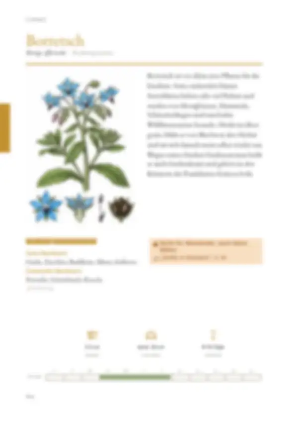
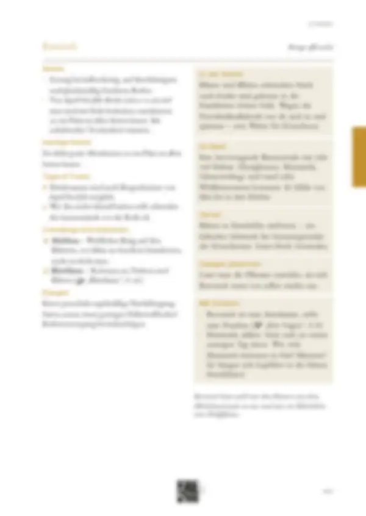

Tippe eine Quelle an, um zu sehen, wo sie verwendet wird – oder tippe auf einen Bereich der Seite.
11 Quellen dieser Doppelseite
Original · abgerufen am 26.10.2026 · ● belegtVerwendet in: Zusammenfassung (Seite allgemein), Häufige Fehler, Geschichte, Seite allgemein
Original · abgerufen am 28.10.2026 · ◐ ErfahrungVerwendet in: Zusammenfassung (Seite allgemein), Piktogramm-Leiste, Monatsleiste, Anbau, In der Küche, Im Beet, Vorrat, Saatgut gewinnen, Düngen, Mit Kindern
Original · abgerufen am 28.10.2026 · ◐ ErfahrungVerwendet in: Zusammenfassung (Seite allgemein), Piktogramm-Leiste, Anbau, In der Küche, Im Beet, Vorrat, Saatgut gewinnen, Düngen, Mit Kindern
Original · abgerufen am 28.10.2026 · ◐ ErfahrungVerwendet in: Zusammenfassung (Seite allgemein), Anbau
Original · abgerufen am 26.10.2026 · ● belegtVerwendet in: Zusammenfassung (Seite allgemein), Sicherheitshinweis „Stoffe in Kräutern“, In der Küche, Im Beet, Vorrat, Saatgut gewinnen, Mit Kindern
Original · abgerufen am 26.10.2026 · ● belegtVerwendet in: Zusammenfassung (Seite allgemein), Sicherheitshinweis „Stoffe in Kräutern“, In der Küche, Im Beet, Vorrat, Saatgut gewinnen, Mit Kindern
Original · abgerufen am 26.10.2026 · ◐ ErfahrungVerwendet in: Zusammenfassung (Seite allgemein), In der Küche, Im Beet, Tipps & Tricks, Vorrat, Saatgut gewinnen, Mit Kindern
Original · abgerufen am 26.10.2026 · ○ ÜberlieferungVerwendet in: Zusammenfassung (Seite allgemein), Nachbarn, Piktogramm-Leiste, Monatsleiste, In der Küche, Im Beet, Tipps & Tricks, Vorrat, Schädlinge & Krankheiten, Saatgut gewinnen, Mit Kindern
Original · abgerufen am 26.10.2026 · ◐ ErfahrungVerwendet in: Zusammenfassung (Seite allgemein), Piktogramm-Leiste, Monatsleiste, In der Küche, Im Beet, Tipps & Tricks, Vorrat, Schädlinge & Krankheiten, Saatgut gewinnen, Mit Kindern
Original · abgerufen am 26.10.2026 · ● belegtVerwendet in: Sicherheitshinweis „Stoffe in Kräutern“
Original · abgerufen am 28.10.2026 · ◐ ErfahrungVerwendet in: Piktogramm-Leiste
● belegt (Versuch, Fachinstitut) · ◐ Erfahrung (Beratung, Praxis) · ○ Überlieferung. Abschnitte ohne eigene Quellenangabe in den Daten zeigen die Quellen der ganzen Seite („Seite allgemein“).